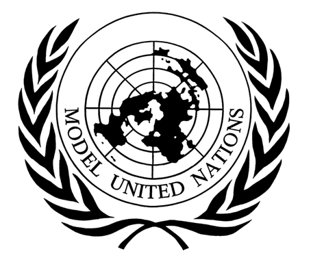

MUN is basically a simulation of the UN, where each person represents a certain country and must debate a certain topic while staying true to their assigned country. The club is located at St. Joseph Seminary and High School and its members are students from the school.
Club sessions take place in school, specifically in classrooms or in the hall. 10th and 11th graders (along with staff members from 12th grade) all participate in a session together, while 9th graders are by themselves. This is because in 9th grade, students receive their training for MUN, while from 10th to 12th grade they participate in conferences and school sessions.
The club is made up of students from grades 9 to grade 12, as well as the MUN director who is also an english teacher. The students in the club are very extroverted, friendly and charismatic. They posses skills such as public speaking, english profeciency, understanding politics, speech writing, debating and leadership. During school sessions, a different topic is given each time and every student is given a country to represent. Therefore, students must research everytime the country they are given and the topic, thus students gain knowledge and skills in many subjects.
Club memebrs get to go to MUN conferences accross the country and abroad, where they meet with students from other schools and sit down in committees with one another to debate a certain topic. These conferences range in difficulty and duration, which some conferences going on for 3 days. There is also an annual trip where the club usually meets with an ambassador of a certain country.
There is one big social network which is between the students in the club. Sub-groups are the networks in each grade and network of students in charge (Secretary General and deputy Secretary Generals) with the director. There is also a network between students who will be chairs in our school’s annual conference, and in this network are also the students in charge of the club as well as the director. Sub-sub-groups would be connections between groups of friends within each grade. Due to the complexity of the club and the many layers of networks it is very difficult to decide how many connections there are.The strongest connections are the ones between groups of friends within each class. But occasionally there are connections between students from different classes or even grades that are very strong.
An example of a strong connection would be between two classmates, where they would primarily communicate with one another face to face on a daily basis and through social media very often. A less stronger connection would be between two students from different grades, where face to face contact would be rare if not at all, and contact over social media may be rare or non existent as well. Moreover, the connection between teacher and student also varies. As students who are more active behind the scenes in the club, are a main part of the school’s conference (such as chairs for the committees), or students who help organize a delegation to go to a certain conference, typically have a stronger connection with the teacher and are in more frequent contact over social media and face to face.
Funding for the club comes through delegate fees (fees paid by club members when they join the club) and funding from the school’s administration. However, when the club takes students to conferences, most conferences are subsidised by the government.